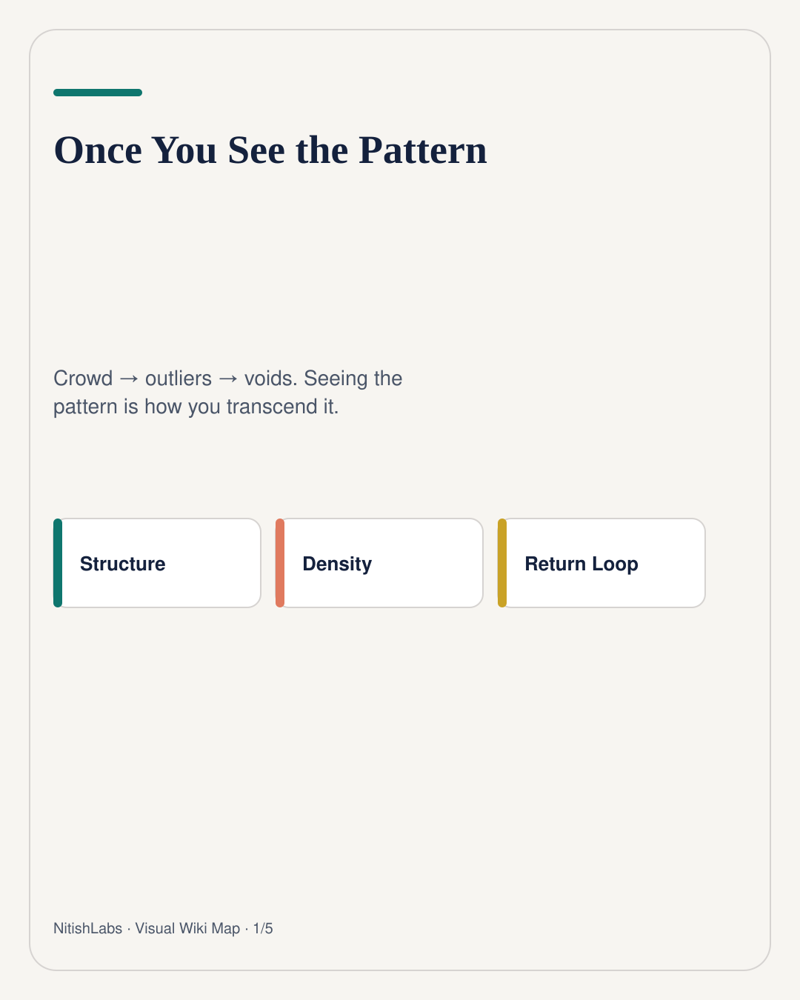
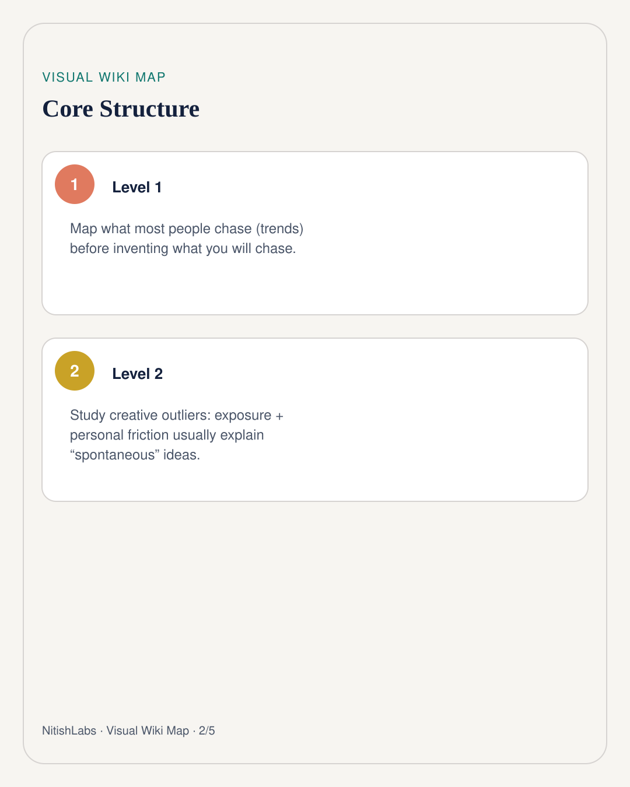
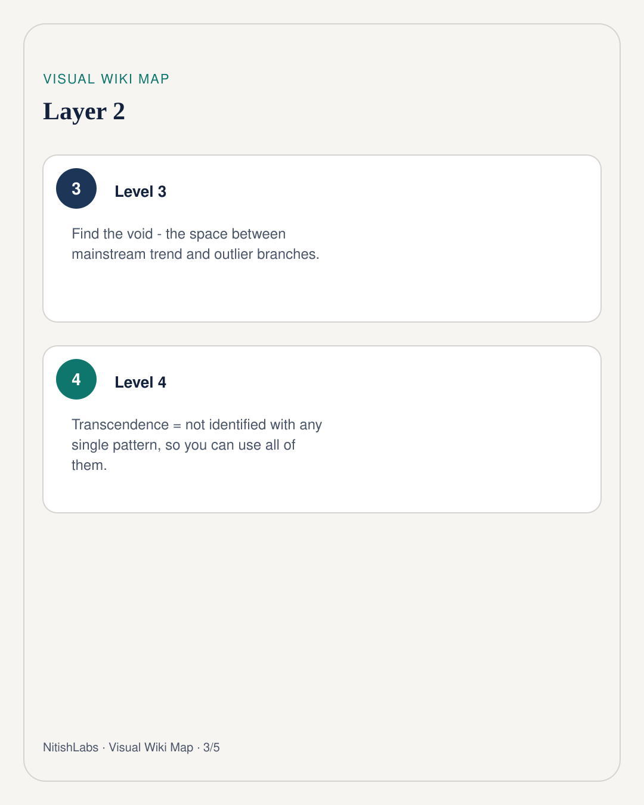
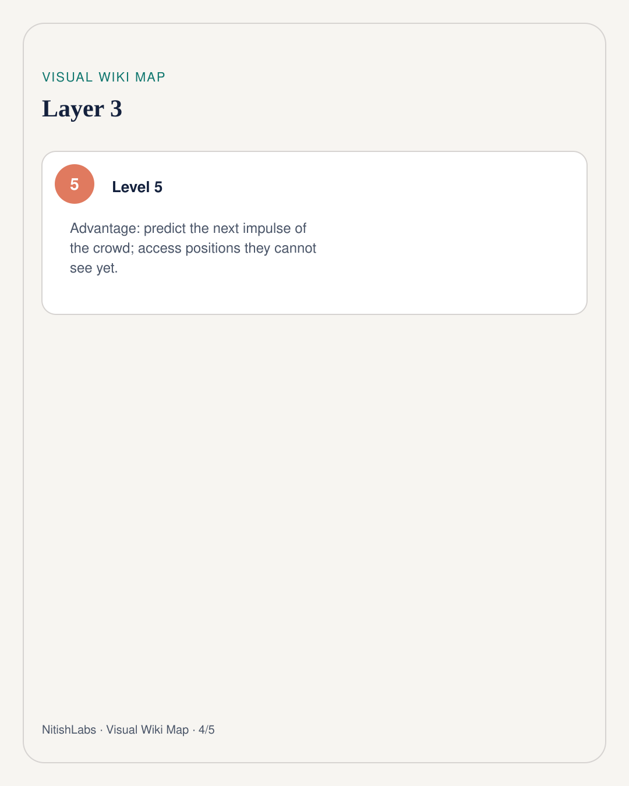
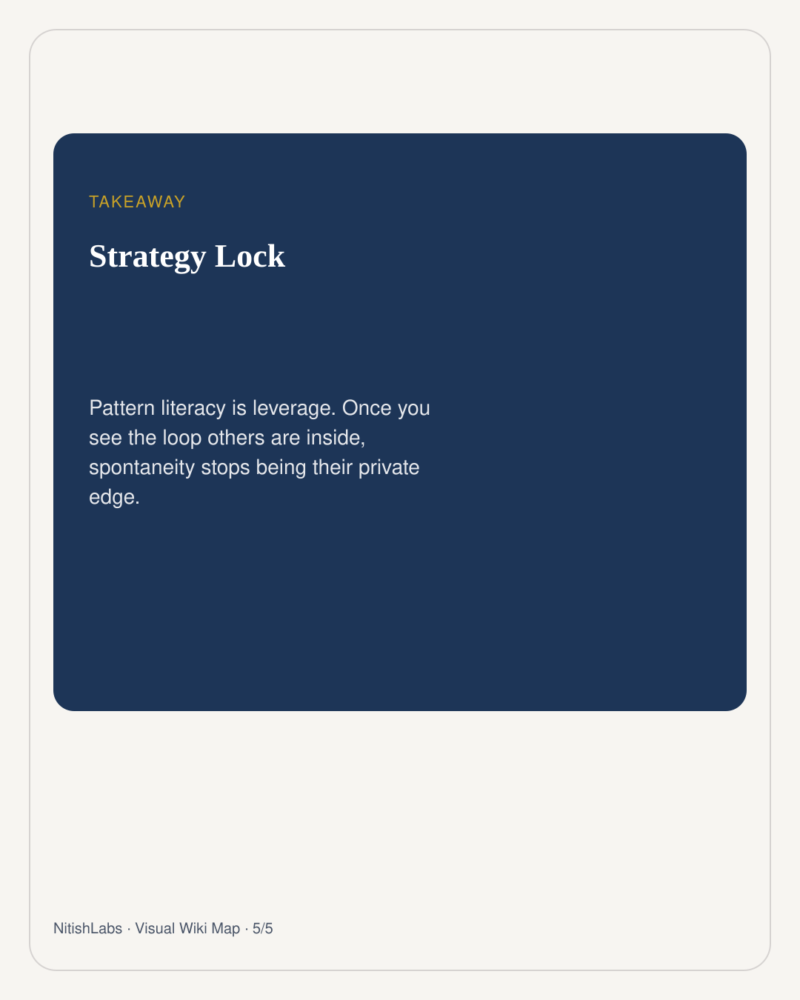

Once You See the Pattern
Spontaneous genius is often exposure plus friction in a trench coat. Pattern literacy is how you stop being surprised by it - and how you find the void nobody is looking at.
Visual Wiki Map
Compressed schema carousel · swipe





Scroll LinkedIn, Twitter, Reddit long enough and you get two reactions: envy at “creative” people, or cynicism that everyone is chasing the same shiny object. Nitish Chauhan’s move is neither. It is observational: train perception to see the pattern underneath both the crowd and the outliers.
The three-layer scan
1. Trend direction - what most people are chasing 2. Outlier branches - who is thinking slightly differently, and why 3. The void - where neither group is looking
Even “spontaneous” products usually compress to a simple story: someone got exposed to a piece of information, or lived a painful conflict, and then built a fix. Information exposure + personal friction. Once you see that, other people’s surprise launches stop feeling like magic. They feel like readable systems.
Transcendence is not arrogance
The leverage is subtle. When you see the pattern ten people are inside, you are no longer identified with any one of them. You can access all of them at once - and predict the next impulse of the person still trapped in one loop.
Once you see the pattern, you naturally transcend it. The benefit is a higher-order seat: predict moves, notice blind spots, refuse the crowd’s default next step.
Agents make this practical. They can scrape discourse at a scale no human can. Your job is not to drown in the scrape. Your job is to ask: what are people doing, what are they missing, and where is the quiet void that looks empty only because nobody has pattern literacy yet?